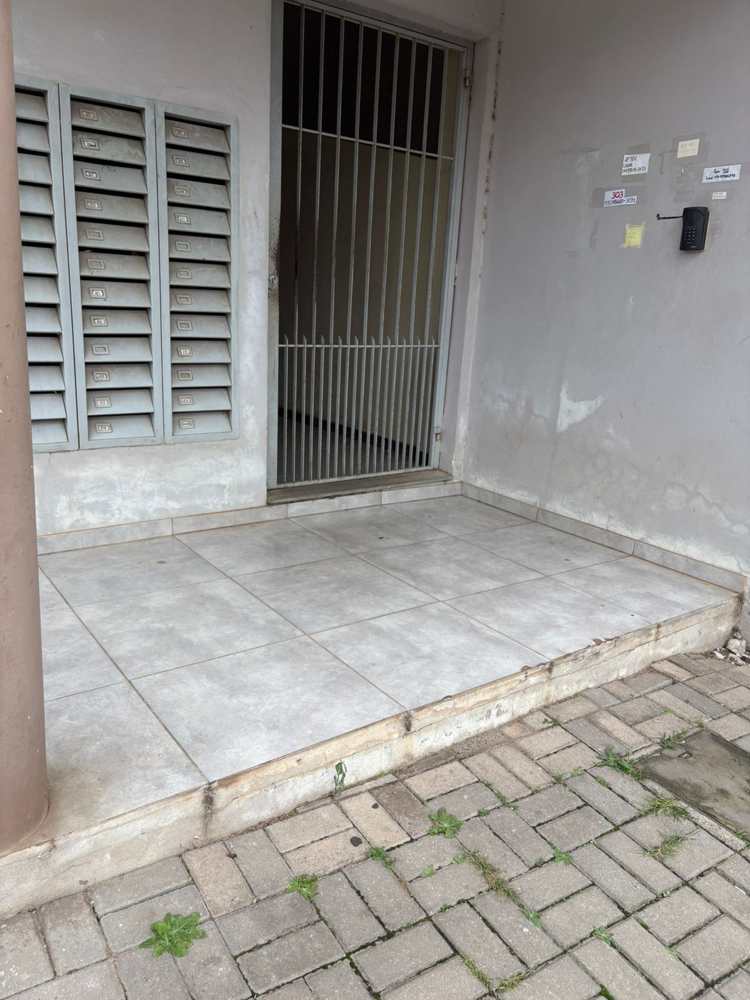
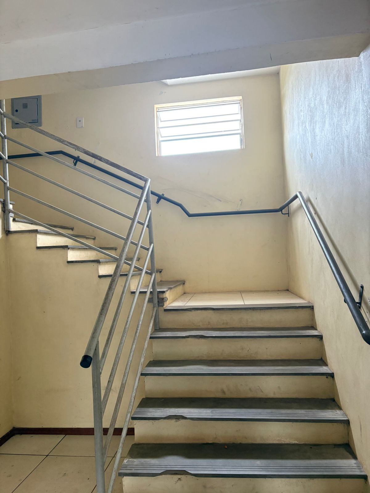

Criando uma web para todos.
Olá, sou Raissa Pedroso, aluna de Ciência da Computação. Este portfólio reflete meu trabalho na disciplina de Acessibilidade e Inclusão Digital, focando em interfaces intuitivas e inclusivas.
Sobre o Projeto
A acessibilidade não é um recurso extra, é um direito. Este site foi desenvolvido seguindo as diretrizes da WCAG, garantindo acessibilidade e inclusão digital para todos os usuários.
Norma técnica de acessibilidade
ABNT NBR 17060:2022: A ABNT NBR 17060:2022 define diretrizes para
tornar sites e aplicativos acessíveis, com requisitos baseados na WCAG, focando em
conteúdo, interação, mídia e estrutura do código.
ISO 9241-171:2008: A ISO 9241-171:2008 traz recomendações
ergonômicas para o desenvolvimento de softwares acessíveis, considerando
diferentes tipos de usuários e promovendo maior usabilidade com apoio a
tecnologias assistivas.
Registro Fotográfico

Descrição da imagem 1: A imagem mostra a entrada do edifício onde moro. Existe uma área com
piso claro que possui um degrau para subir da calçada (pavimentada com blocos de concreto)
até o patamar de entrada. À esquerda, há uma estrutura metálica com várias caixas de
correio e, ao centro, o portão principal gradeado que dá acesso ao prédio. Na parede à
direita, nota-se um interfone e etiquetas com informações dos apartamentos.
Problema: Esta imagem da entrada do meu prédio evidencia um problema crítico de
acessibilidade: o degrau impede a locomoção autônoma de pessoas com deficiência,
usuários de cadeira de rodas ou indivíduos com mobilidade reduzida, como aqueles
que utilizam bengalas ou muletas, impossibilitando a circulação com segurança e
independência.

Descrição da imagem 2: Esta imagem apresenta a escadaria interna
que dá acesso aos apartamentos do edifício. Trata-se de uma estrutura de lances
retos com um patamar intermediário, equipada com corrimãos metálicos laterais.
Problema: A segunda imagem reforça a barreira identificada na
primeira imagem: a ausência de um elevador ou de qualquer sistema de
transposição vertical alternativo, como uma plataforma elevatória, isso torna
o edifício inacessível para pessoas com deficiência física, idosos ou qualquer
indivíduo com mobilidade reduzida temporária ou permanente. Essa configuração
força a dependência exclusiva da escada, isolando moradores com dificuldades de
locomoção e impedindo o acesso autônomo às suas residências.
Meu Recurso Educacional Aberto - REA
Meu recurso educacional aberto foi inspirado em uma palestra ministrada por uma convidada trazida pela professora Amanda, cujo tema abordado foi o “Envelhecimento Humano”. A partir dessa palestra, fiquei interessada pelo assunto e decidi desenvolver meu REA com base nessa temática. A minha proposta foi criar uma apresentação acessível no Canva sobre o tema “Desenvolvimento de Tecnologias para o Envelhecimento: Inclusão e Acessibilidade Digital”. O público-alvo são os desenvolvedores, com o objetivo de conscientizá-los sobre a importância de criar tecnologias acessíveis e inclusivas para a população idosa. Além disso, o REA possui licença aberta Commons BY (CC BY), permitindo o compartilhamento e a adaptação do material, desde que os devidos créditos sejam atribuídos. Essa foi a ideia central do meu projeto.
Tópicos especiais em acessibilidade e inclusão digital
Estudo Dirigido
As principais lições aprendidas com esses artigos estão relacionadas ao desenvolvimento web voltado para a população idosa. Foi possível compreender que os idosos enfrentam dificuldades no uso das tecnologias, o que pode gerar insegurança e dificultar seu acesso aos serviços digitais. Por isso, é fundamental que os desenvolvedores criem sites e aplicações mais inclusivos e acessíveis, considerando as necessidades desse público. Esse tema é cada vez mais importante, pois a população idosa vem crescendo e não deve ser excluída do ambiente digital. Garantir a inclusão digital dos idosos não é apenas uma questão de acessibilidade, mas também de promover igualdade, autonomia e participação social, contribuindo para uma sociedade mais justa e inclusiva.